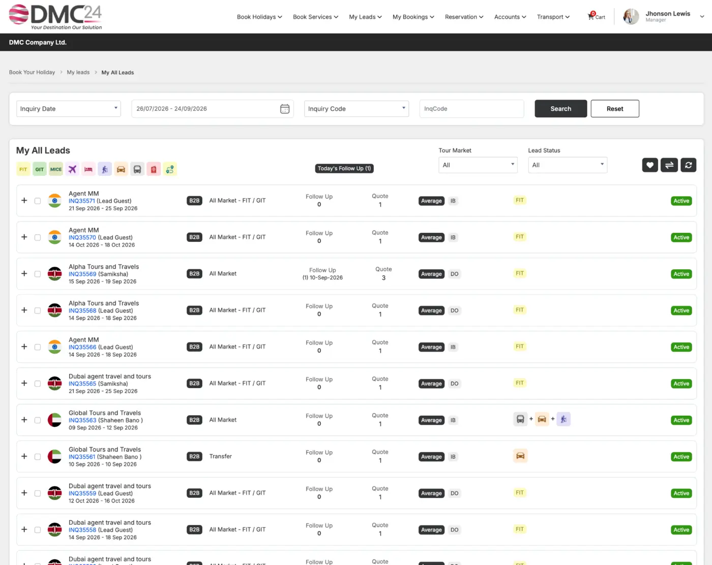

ENQ
Enquiry Management
Capture FIT, GIT, agent and direct enquiries with source market, travel dates, passenger details and requirements.
Bring enquiries, customers, agents, follow-ups, quotations and conversion activity into one structured sales environment built for destination companies.

Capture enquiries, assign follow-ups and track sales stages alongside the related customer, agent and quotation records.
Capture FIT, GIT, agent and direct enquiries with source market, travel dates, passenger details and requirements.
Maintain customer, agency, contact, commercial and activity histories in one connected database.
Schedule calls, emails, reminders and next actions so opportunities continue moving.
Track leads by stage, owner, market, team and probability from first contact to confirmation.
Move qualified enquiries into detailed FIT or group quotations without re-entering core information.
Analyse employee, market, business-group and conversion performance through dashboards and reports.
Record the enquiry and source.
Understand requirements, budget and opportunity.
Build the proposal and manage next actions.
Create the booking and retain the complete history.
Tell us how your DMC works today. We’ll show you how DMC24 can support tomorrow.